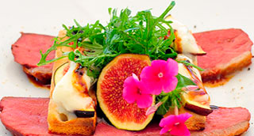

Magret de pato asado con hojas de higuera. Higos salteados, asados y en chutney
"La Marinada, una nueva técnica para salar piezas medianas y grandes. Combinación dulce-salada de la pechuga de pato jugosa y la cremosidad de los higos. Una técnica ancestral del asado envuelto en hojas"

| Magrets de pato | 2 un. |
| Sal gruesa | 800 gr. |
| Azúcar | 80 gr. |
| Pimienta | 2 gr. |
| Higos | 4 un. |
| Hojas de Higuera | 6 un. |
| Oporto | 50 ml. |
| Salsa de soja | 40 ml |
| Miel de azahar | 50 ml. |
| Vinagre Balsámico | 50 ml. |
| Higos | 8 un. |
| Oporto | 50 ml. |
| Mantequilla | 75 gr. |
| Balsámico | 15 ml. |
| Tomillo Limón | 4 un |
- Mezclar la sal, el azúcar y la pimienta. (Marinada). Macerar los magrets en la marinada de sal un mínimo de 30'.
- Triturar en Thermomix la soja, miel, balsámico y cuatro higos hasta obtener una "Chutney" con cuerpo.
- Retirar el magret de la marinada y limpiarlo bien. Hacer cortes en la parte de la grasa del magret en forma de cuadrícula.
- Marcar los magrets en una sartén sin ningún tipo de grasa hasta que esté bien crujientes.
- Retirar los magrets de la sartén y colocarlos sobre las hojas de higuera dispuestas en una fuente.
- Pintarlo con el Chutney de higos y cerrarlo con el resto de hojas de higuera.
- Hornear durante 10' a 180º. Retirar del horno y dejar reposar tapado 10' más.
- Marcar 4 higos en forma de cruz. Disponer encima un trocito de mantequilla.
- Colocar en una pequeña fuente apta para el horno y asar durante 5' a 160º (horno previamente calentado). Retirar y reservar.
- Cortar el resto de higos en cuartos.
- En una sartén fundir el resto de la mantequilla, añadir los higos, saltear 1', añadir el Oporto y dejar reducir 1' más. Retirar y reservar.
- Emplatar el magret cortado en escalopes al grosor elegido.
- Servir acompañado de los higos asados y glaseados.
- Colocar al lado de los higos una cucharada de "Chutney" y unas gotas de balsámico reducido. Añadir unas ramas de tomillo limón.